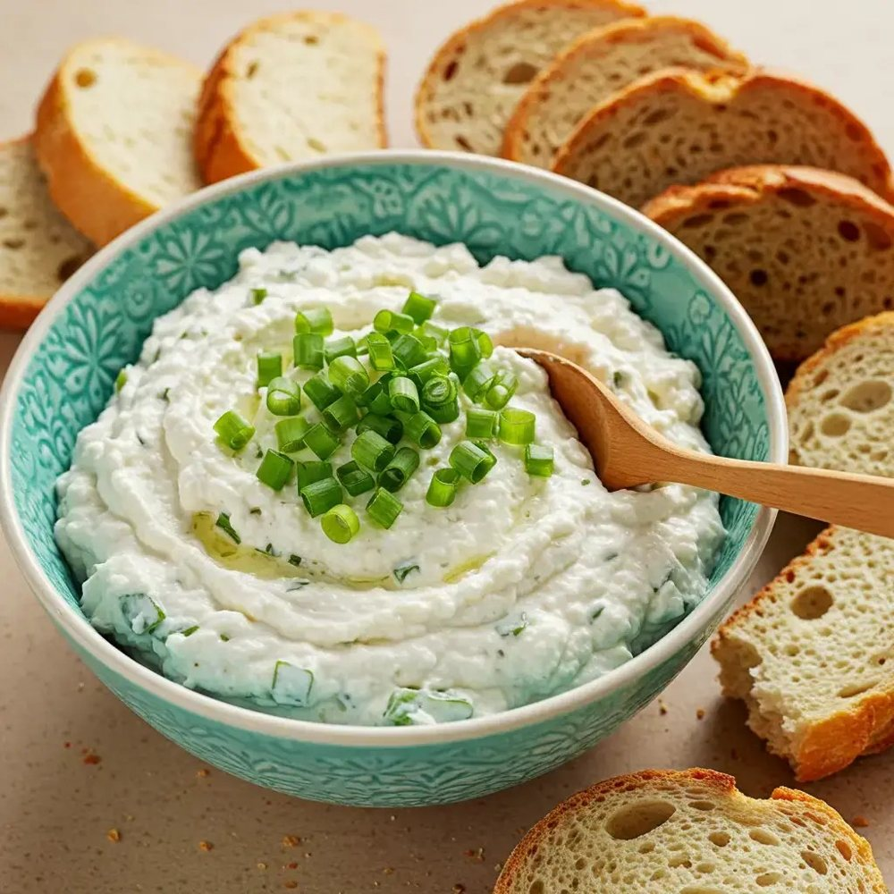

Acompanhamentos
Molho “Supreme”

Ingredientes
- 1 potinho de creme de ricota light (200 g)
- 50 g de iogurte desnatado
- 30 g de ketchup
- 15 g de mostarda
- 5 g de alho em pó
- 5 g de cebola em pó
- 1 colher (café) de fumaça em pó
- Sal e pimenta-do-reino a gosto
Modo de preparo
- Bata todos os ingredientes com um mixer ou liquidificador até obter um creme homogêneo.
- Ajuste o sal conforme o seu gosto.
- Guarde em um potinho de vidro ou bisnaga. Leve à geladeira por pelo menos 30 minutos antes de usar, para apurar o sabor.
Observação
Receita de um vídeo do TikTok de @lucaslacerdanutri.